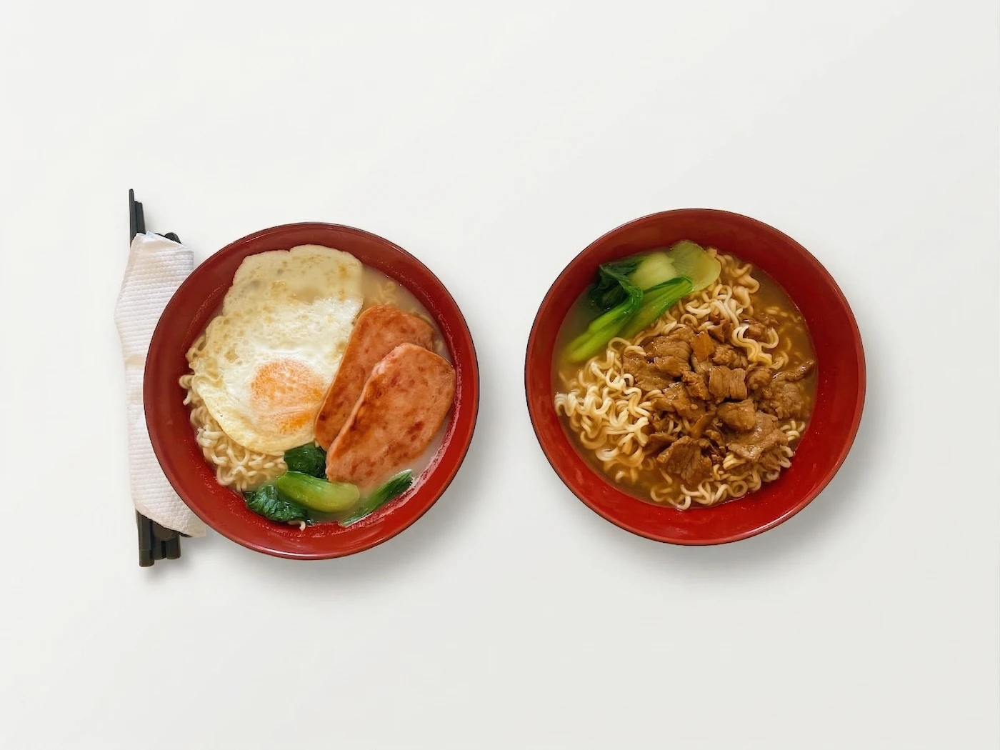

Bringing Hong Kong's Heart to Sydney
The Peak Hong Kong Cafe is more than a restaurant. It's a portal to the vibrant streets of Hong Kong, where the aroma of milk tea and freshly baked pineapple buns fills the air.
Founded with a deep respect for tradition, we've recreated the authentic Cha Chaan Teng experience that has been the heartbeat of Hong Kong culture for generations. Every dish we serve honors time-tested recipes while using only the freshest ingredients.
Our kitchen is led by chefs who grew up in Hong Kong's Cha Chaan Tengs, ensuring that every bite transports you to the bustling tea houses of Mong Kok, the cozy corners of Sheung Wan, and the vibrant energy of Tsim Sha Tsui.
Every soup we serve is handmade and slow-cooked for over 5 hours, drawing out deep, rich flavours that guarantee the freshest, most authentic taste in every bowl.
"We don't just serve food, we preserve a way of life, a cultural treasure that connects generations."Explore Hong Kong Food in Sydney →
